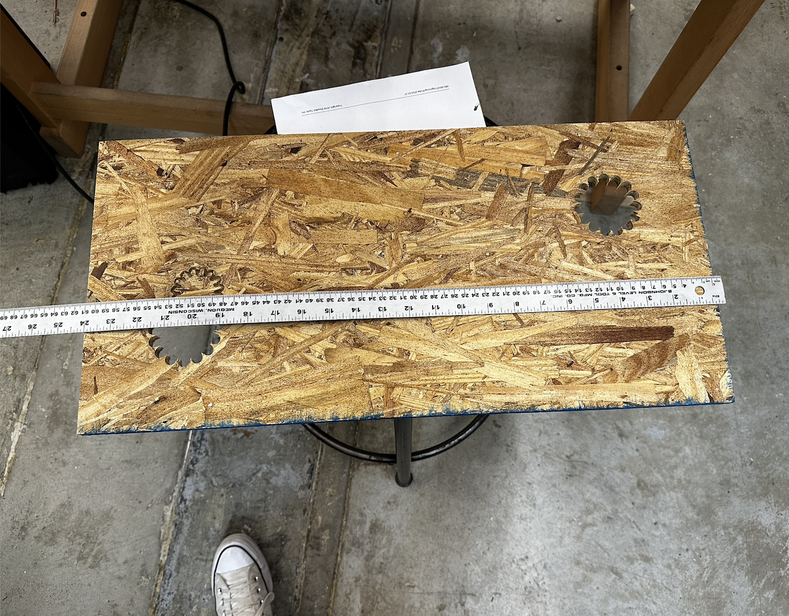
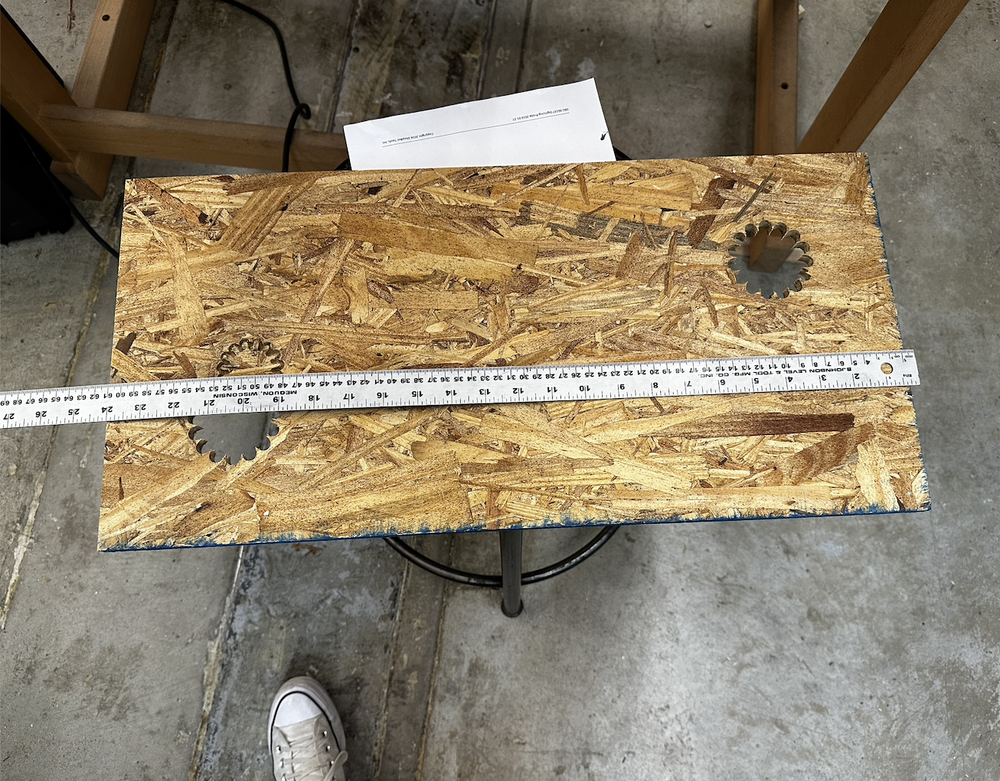
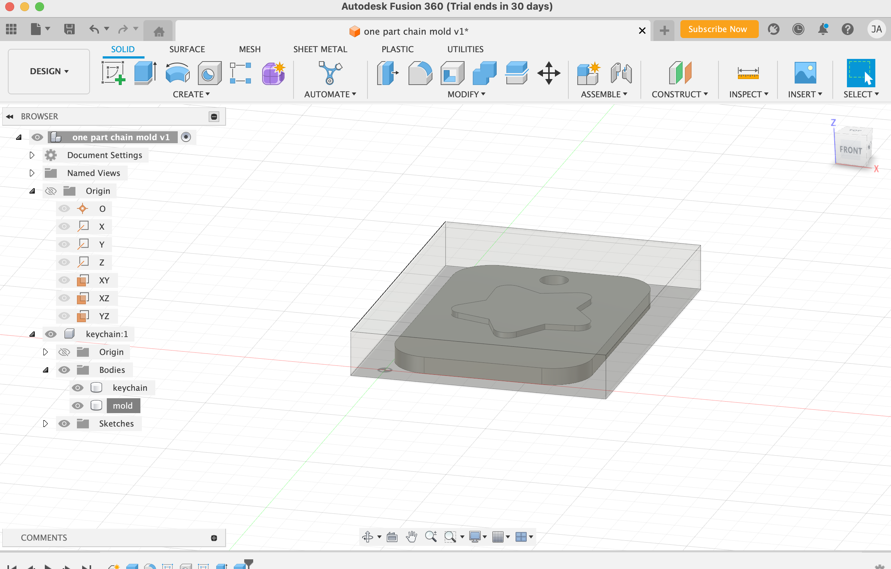
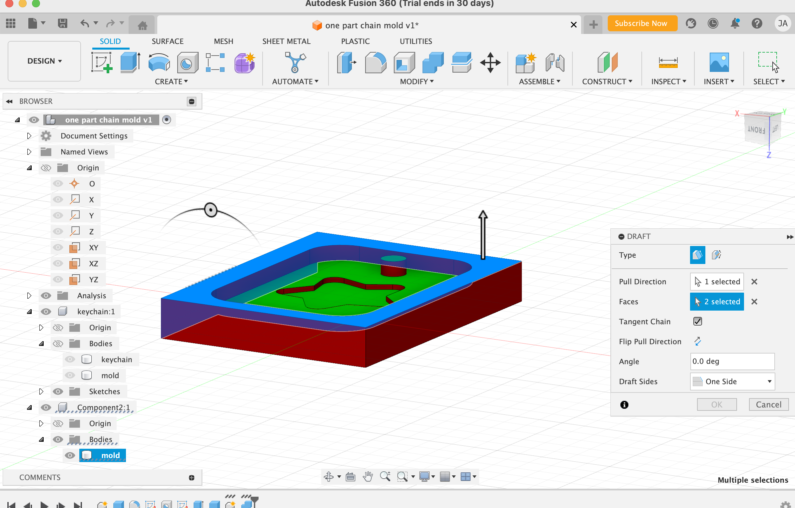

Assignment
For this weeks assignment we had to design something and make it using CNC, and create something by molding and casting.
CNC Milling
Materials
ShopBot, jpeg converted into dfx and scroll saw.
Introduction
I wanted a door hanger for my room, and thought that this was the perfect moment to do so by using the ShopBot. so, I decided to do a circular shape and write my name inside it.
The Process
For this project, I decided to do my design directly in the Aspire Software as I was having some troubles converting my jpeg into dfx. For that, I started by measuring the thickenss of the wood, being 12.1mm. Then, proceed to measure the width, 619 mm, and height of the wood, 290mm, to ensure that the design fits perfectly
 

I then opened Aspire Software and once the measurements were set. I proceed to make the design. Then, callibrated everything and selected what I wanted to raster and cut. In my case, I raster the letters and cut the circle by selecting the option of "Pocket toolpath".
Lastly, I safe all my work into a file located in desktop and press "start". It took 21 seconds to be concise for the whole process. After it finished, I took the piece out of the wood with a spatula, and as you could not appreciate the letters as much as I wanted to (maybe because I put the depth too low), I used the sharpie to color the inside of the letters.
Final Result
This is the final result. Since the border was a bit irregular, I used sand paper to make it smooth.

Molding and Casting
Materials
Fusion 360, 3D printer, Plaster
Introduction
Due to the fact that I am always loosing my keys, I realize that this wekk assignment was the perfect time to fix this problem. So, decided to create a mold of a keychain that has a unique feature, a star.
The Process
For this project, I started by creating my mold with Fusion 360 (it took me more than expected, as I was trying to figure out a way to get 30 more days of free trial)
 Anyway, send it to the 3D printer that took around an hour and a half to print, and proceed to mix equal part, A and B by volume to get the desired material to be able to make the mold.
Finally, i let the mixture sit in to mold all the night so that is hard enought to be used in the final project.
Finally,I used the plaster and added it to the shape inside the mold.